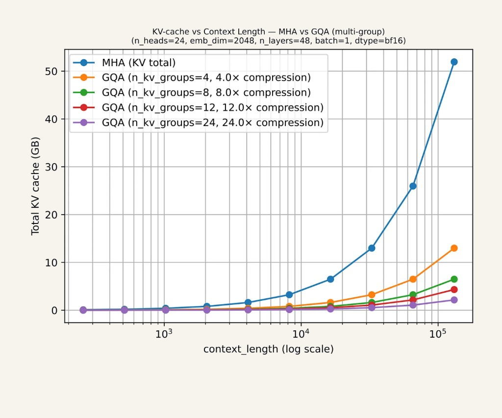

Лекция 2. Эволюция трансформеров к современным LLM-архитектурам10
Экономия памяти в GQA

Преимущество GQA в кэше. Несколько голов запроса делят одну пару ключ–значение, поэтому при порождении хранить и читать приходится меньше. Кэш сокращается во столько раз, сколько запросов приходится на один ключ. Качество при этом остаётся близким к полному многоголовому вниманию.
График показывает, когда эта экономия становится заметной. Пример: 24 головы, ширина 2048, 48 слоёв, bf16. Пока контекст короткий, кривые почти совпадают. Около 10⁵ токенов полный кэш MHA занимает примерно 52 ГБ. Сжатие в 4 раза оставляет около 13 ГБ, в 24 раза — около 2 ГБ. Поэтому для длинного контекста групповое внимание и стало обычным.